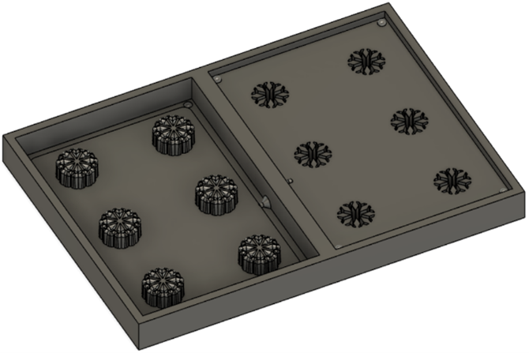

Í verkefni 5 átti að hanna, teikna, undirbúa og fræsa mót. Vegna covid takmarkana var ekki hægt að fræsa mótið, en í staðinn átti að skila simulation af framleiðslunni. Hópurinn samanstóð enn og aftur af Birtu, Davíð og Elísu. Verkefninu var skipt á milli hópmeðlima á þann hátt að Birta teiknaði hlutinn okkar, Davíð teiknaði pósitívu og negatívu til að gera mót fyrir hlutinn og Elísa sá um að gera toolpaths og simulation fyrir framleiðslu, ásamt því að skrásetja verkefnið á sameiginlega vefsíðu.
Í hugmyndaleitinni fyrir verkefnið var leitað að "things you mold". Þá kom til dæmis mynd af mismunandi klakaformum og var þá ákveðið að gera mót fyrir klakaform. Við vildum ekki hafa klakaformið hefðbundið með kassalaga klökum, heldur sóttum innblástur á internetið. Leitarorð sem notuð voru má finna neðst á síðunni. Ákveðið var að gera klakaform með innblástur af forminu á myndinni hér að neðan:

Eftir að hugmyndin var komin hófst Birta handa við að hanna og teikna klakaformið. Ítarleg skrásetning á því er á vefsíðunni hennar. Útkomuna má sjá á myndinni hér að neðan:
Skrásetning hönnunar og teikningar á vefsíðu Birtu
Eftir að Birta hafði lokið við að hanna og teikna hlutinn fékk Davíð teikninguna senda og gerði pósitívu og negatívu úr henni til að útfæra mót fyrir mót fyrir klakaformið. Ítarlega lýsingu á verkþætti Davíðs er að finna á vefsíðunni hans, en á myndinni hér að neðan má sjá loka útkomuna á mótinu.
Skrásetning á mótagerð á vefsíðu Davíðs
Þegar Davíð var búinn að útbúa mótið sendi hann Elísu teikninguna svo hún gæti útbúið úr henni skurðarferla. Á vefsíðunni hennar er að finna ítarlega skrásetningu á hvernig skurðarferlagerðin fór fram. Á myndinni hér fyrir neðan má sjá dæmi um skurðarferil:
Skrásetning skurðarferla og hermunar á vefsíðu Elísu
Eftir að skurðarferlarnir höfðu verið útbúnir var framkvæmd hermun á framleiðslunni á þeim, þar sem ekki var hægt að framleiða mótið vegna samkomutakmarkana. Myndband af hermun allra skurðarferla má sjá hér að neðan:
Teikning af móti fyrir klakaform
Skurðarferlar fyrir mót fyrir klakaform
"things you mold"
"fun ice cube shapes"
"snowflake ice cube mold"